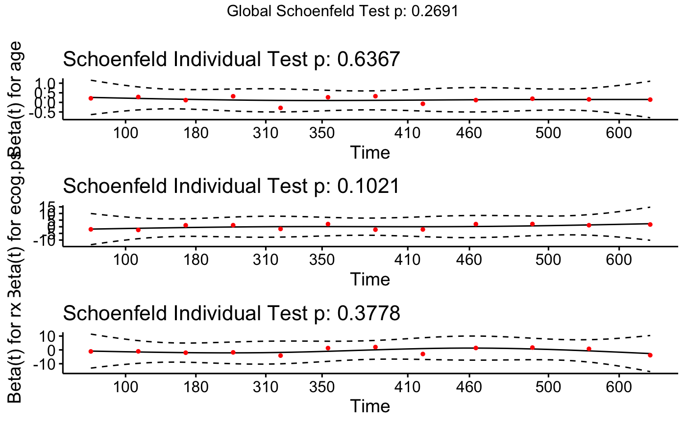

Displays a graph of the scaled Schoenfeld residuals, along with a smooth curve using ggplot2. Wrapper around plot.cox.zph.
ggcoxzph( fit, resid = TRUE, se = TRUE, df = 4, nsmo = 40, var, point.col = "red", point.size = 1, point.shape = 19, point.alpha = 1, caption = NULL, ggtheme = theme_survminer(), ... ) # S3 method for ggcoxzph print(x, ..., newpage = TRUE)
Arguments
| fit | an object of class cox.zph. |
|---|---|
| resid | a logical value, if TRUE the residuals are included on the plot, as well as the smooth fit. |
| se | a logical value, if TRUE, confidence bands at two standard errors will be added. |
| df | the degrees of freedom for the fitted natural spline, df=2 leads to a linear fit. |
| nsmo | number of points used to plot the fitted spline. |
| var | the set of variables for which plots are desired. By default, plots are produced in turn for each variable of a model. |
| point.col, point.size, point.shape, point.alpha | color, size, shape and visibility to be used for points. |
| caption | the caption of the final grob ( |
| ggtheme | function, ggplot2 theme name.
Allowed values include ggplot2 official themes: see |
| ... | further arguments passed to either the print() function or to the |
| x | an object of class ggcoxzph |
| newpage | open a new page. See |
Value
Returns an object of class ggcoxzph which is a list of ggplots.
Details
Customizing the plots: The plot can be easily customized using additional arguments to be passed to the function ggpar(). Read ?ggpubr::ggpar. These arguments include font.main,font.submain,font.caption,font.x,font.y,font.tickslab,font.legend: a vector of length 3 indicating respectively the size (e.g.: 14), the style (e.g.: "plain", "bold", "italic", "bold.italic") and the color (e.g.: "red") of main title, subtitle, caption, xlab and ylab and axis tick labels, respectively. For example font.x = c(14, "bold", "red"). Use font.x = 14, to change only font size; or use font.x = "bold", to change only font face.
Functions
ggcoxzph: Graphical Test of Proportional Hazards using ggplot2.
Examples
library(survival) fit <- coxph(Surv(futime, fustat) ~ age + ecog.ps + rx, data=ovarian) cox.zph.fit <- cox.zph(fit) # plot all variables ggcoxzph(cox.zph.fit)# plot all variables in specified order ggcoxzph(cox.zph.fit, var = c("ecog.ps", "rx", "age"), font.main = 12)# plot specified variables in specified order ggcoxzph(cox.zph.fit, var = c("ecog.ps", "rx"), font.main = 12, caption = "Caption goes here")